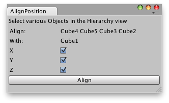

EditorWindow.OnInspectorUpdate()
Description 描述
OnInspectorUpdate is called at 10 frames per second to give the inspector a chance to update.

Align position of the selected objects.
using UnityEditor; using UnityEngine; using System.Collections;
// Simple script that aligns the position of several selected GameObjects // with the first selected one.
public class Example : EditorWindow { bool alignToX = true; bool alignToY = true; bool alignToZ = true; string selected = ""; string alignTo = "";
[MenuItem("Example/OnInspectorUpdate example")] static void Init() { Example window = (Example)GetWindow(typeof(Example)); window.Show(); }
void OnInspectorUpdate() { // Call Repaint on OnInspectorUpdate as it repaints the windows // less times as if it was OnGUI/Update Repaint(); }
void OnGUI() { GUILayout.Label("Select various Objects in the Hierarchy view"); selected = Selection.activeTransform ? Selection.activeTransform.name : "";
foreach (Transform t in Selection.transforms) { if (t.GetInstanceID() != Selection.activeTransform.GetInstanceID()) { alignTo += t.name + " "; } }
EditorGUILayout.LabelField("Align: ", alignTo); alignTo = ""; EditorGUILayout.LabelField("With: ", selected);
alignToX = EditorGUILayout.Toggle("X", alignToX); alignToY = EditorGUILayout.Toggle("Y", alignToY); alignToZ = EditorGUILayout.Toggle("Z", alignToZ);
if (GUILayout.Button("Align")) { Align(); } }
void Align() { if (selected == "" || alignTo == "") { Debug.LogError("No objects selected to align"); }
foreach (Transform t in Selection.transforms) { Vector3 alignementPosition = Selection.activeTransform.position; Vector3 newPosition;
newPosition.x = alignToX ? alignementPosition.x : t.position.x; newPosition.y = alignToY ? alignementPosition.y : t.position.y; newPosition.z = alignToZ ? alignementPosition.z : t.position.z;
t.position = newPosition; } } }